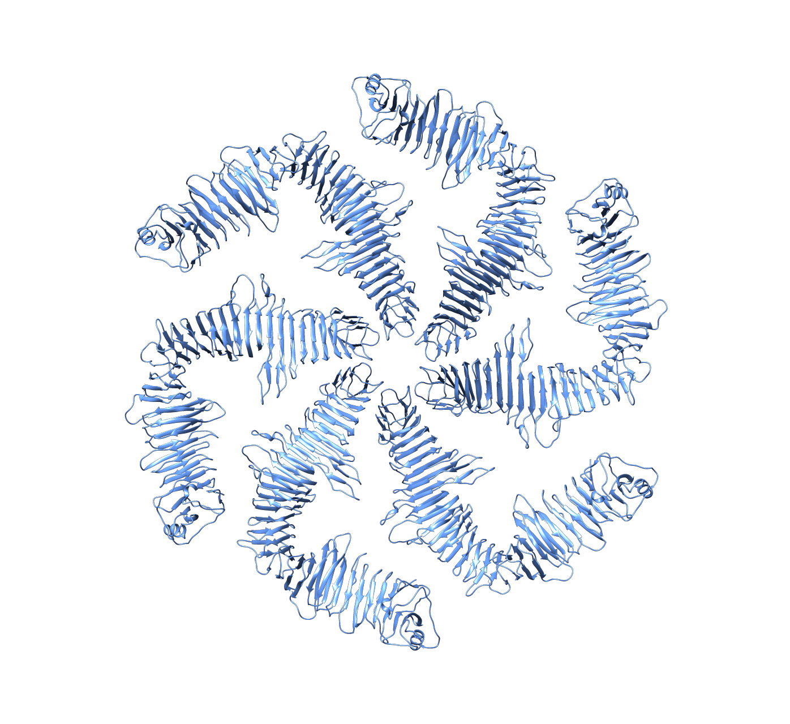

Chapter 2 Envelope
2.1 Mycoplasma genitalium
The fundamental unit of life is the cell – a contained self-replicating assembly. For many species, including all Bacteria and Archaea, the organism consists of a single cell. And for nearly all species, no matter how many cells an organism eventually contains (probably around 10 trillion in your case), it started life as a single cell. As you’ll see, the details of these cells vary, but every cell on Earth is the same at heart – a DNA-based replicator machine built from just four macromolecules: nucleic acids, proteins, lipids and carbohydrates.
Imagine that you’re a structural engineer tasked with building one of these cells. What’s the first step? Let’s start with the container. No matter what the first self-replicating molecules were (likely RNA), they didn’t constitute a cell until they became packaged in a container. You’d probably want a flexible container that allowed you to sort a subset of molecules from the environment. Evolution agrees. All cells are enclosed by a selectively permeable membrane, made of lipids and proteins Schematic – Lipid bilayer, that allows them to differentiate their contents from the environment. This selectivity is a critical feature for the life of the cell Schematic – ATP synthase. The compartment enclosed by a cell’s membrane is called the cytoplasm (“cell mold” [the membrane being the container that shapes the mold]).
Almost all archaea and many bacteria, like these Mycoplasma genitalium cells, are monoderms (“single skin”). This means that their cytoplasm is enclosed by a single membrane. At the resolution of this image, the membrane looks like a single dark line, but remember that it’s really a bilayer, as you’ll see in some later images.
Figure 2.1: Mycoplasma genitalium Collected by: Gregory Henderson 10.22002/D1.1350
2.1.1 Lipid bilayer

Lipids have a hydrophilic head (red/orange in the schematic) and hydrophobic tails (gray); in water they spontaneously pack together side-by-side to shield their tails from unfavorable interactions with water, forming closed double-layered bags. Proteins with regions of amino acids containing hydrophobic side groups embed these regions in lipid bilayers. Other proteins are fused to lipids, tethering them to the membrane. In fact, cells’ “lipid” membranes actually constitute roughly equal fractions of lipids and proteins. One key difference between archaea and bacteria (and with them, eukaryotes) is the lipid that makes up their membranes. Hybrid membranes containing both these lipid types can be made artificially, and it’s possible that the last universal common ancestor of all cells on Earth contained both types, with specialization later occurring in different lineages.
2.1.2 ATP synthase and energy production

The chemical properties of lipids make membranes impermeable to ions and large or hydrophilic molecules (but not to water). Cells take advantage of this property to establish an ion gradient across the membrane, using a chain of electron-carrying proteins in the membrane to pump protons out of the cell. Protein complexes in the membrane called ATP synthases (like this one from Escherichia coli) use the resulting ion potential to generate energy. The machine provides a conduit for protons to flow down their potential, producing a “proton-motive force” that spins the machine’s rotor, generating energy that is chemically stored in ATP, the energetic currency of the cell.
2.2 Listeria monocytogenes
Being able to selectively move things into your cell enables it to do some powerful things. It also poses a structural problem, though. Remember that water can pass freely through the membrane, which means that increasing the solute concentration inside relative to the environment will cause water to rush in as well, introducing a pressure (known as turgor pressure) on the membrane. Lipid bilayers, though, are unable to withstand much pressure. If your cell lives exclusively in a consistent, and fairly high-osmolarity, environment (like our bodies, in the case of the Mycoplasma genitalium you just saw), it can balance internal and external osmolarity to minimize turgor pressure on the membrane. But most cells experience much more variable environments. How can you keep your cell from bursting in such conditions?
You’ll probably want to add some rigid scaffolding outside the membrane to buttress it against turgor pressure. Nearly all bacteria do this using a material called peptidoglycan: long stiff polymers of glycan sugars crosslinked by short peptides into a chain-mail-like mesh. The full scaffold of this material surrounding the cell is called its sacculus, or cell wall. Some archaea also have cell walls, made of a molecule similar to peptidoglycan, but chemically distinct. Most archaea, though, rely on a different structure for support, as you’ll see later in this chapter.
In monoderm bacteria like this Listeria monocytogenes, the cell wall is significantly thicker than the membrane. It comprises several layers of peptidoglycan, which can’t be seen individually at the resolution of this image, so the cell wall appears as a uniformly textured layer More: Peptidoglycan architecture. It’s still a mystery how large molecules can pass through this dense layer on their way to and from the cell. Not all bacterial cell walls are chemically identical More: Methanobacterium formicicum. And in some conditions, cells can lose their walls Schematic – L-form bacteria.
Figure 2.2: Listeria monocytogenes Collected by: Ariane Briegel 10.22002/D1.1351
2.2.1 Bacillus subtilis
The sacculus is so robust that it persists even after cells are lysed and their other components digested. This sacculus isolated from a Bacillus subtilis cell has retained its shape, simply flattening with the release of contents and pressure from inside. By observing how these purified sacculi rip and curl, we can infer something about the architecture of the cell wall; we think that the long glycan strands are oriented in hoops circling the short axis of the cylindrical cell and the short peptide crosslinks are more or less aligned with the long axis.
Figure 2.3: Bacillus subtilis Collected by: Morgan Beeby 10.22002/D1.1360
2.2.2 L-form bacteria

There is no universal adaptation in Nature; advantages in one environment can become liabilities in another. This concept is exemplified by an adaptation of some bacteria which lose their cell walls in certain conditions, such as in the presence of antibiotics (the cell wall is a common target of antibiotics). This state is called the L-form (named for the Lister Institute where it were discovered). As you can see in these Bacillus subtilis, cells in this state are pleomorphic, exhibiting a variety of sizes and shapes. As you would expect, L-form cells are more sensitive to environmental conditions. In the lab, they’re protected from lysis by increasing the osmotic pressure of the environment, for instance by adding sucrose. The environment in your body, though, would have the same effect, as we discussed for Mycoplasma genitalium. L-form bacteria are interesting for many reasons (including human health), one of which is that they give us a fascinating window into how early cells – prior to the evolution of the cell wall – might have looked and behaved.
2.3 Cupriavidus necator
Why stop at one membrane, though? Think about how the bacteria you’ve just seen compare with eukaryotic cells. The eukaryotic cells are much larger (maybe 100-1,000 times larger in volume), and they contain many internal membranes that form specialized subcompartments, like the nucleus and mitochondria. Bacteria and archaea don’t have membrane-bound organelles inside, but in fact many bacteria do create an additional compartment outside the cell with another, outer, membrane. These bacteria, like the Cupriavidus necator cell you see here, are called diderms (“double skin”). The extra compartment between their membranes is known as the periplasm (“mold between”). This antechamber contains a unique subset of proteins, many of which function in escorting things into and out of the main cell, as you’ll see in later chapters.
Compared to the inner membrane, the outer membrane has some unique properties! It is more permeable and not proton-tight (so it can’t be used to generate ATP). It is often asymmetric, with a different composition of lipids and proteins in each of the two leaflets. The outer membrane is anchored to the sacculus Schematic – Braun’s lipoprotein. And the sacculus itself is different. Rather than containing many layers of peptidoglycan like in the Listeria monocytogenes cell you just saw, the diderm sacculus consists largely of a single-layered peptidoglycan mesh More: Diderm sacculus architecture, which you can see here as a thin line in the periplasm. This difference in the sacculus enables a well-known bacterial classification system: the Gram stain, which binds peptidoglycan. Gram-positive cells, typically monoderm, contain much more peptidoglycan than Gram-negative cells, which are typically diderm. Thinking about this thin defense against turgor pressure underscores a major challenge for cell growth. To insert new material, existing bonds in the sacculus must be broken, without bursting the cell in the process Schematic – Sacculus remodeling.
Figure 2.4: Hydrogenovibrio crunogenus Collected by: Cristina Iancu 10.22002/D1.1352
2.3.1 Braun’s lipoprotein

Lipoproteins are hybrid molecules, formed by covalently linked lipid and protein pieces. The lipid allows them to embed into a membrane, tethering the attached protein to function nearby. Braun’s lipoprotein, which is one of the most abundant molecules in the outer membrane of cells like Escherichia coli, uses its tethered protein portion to bind the peptidoglycan cell wall, creating a link between the outer membrane and the cell wall (adding up, for a typical E. coli cell, to about 100,000 links). These links determine the distance between these two components. Not all diderms use Braun’s lipoprotein, though, and some bacteria have notably labile outer membranes More: Outer membrane lability.
2.3.2 Escherichia coli
Compare this diderm sacculus purified from Escherichia coli to the monoderm sacculus on the last page. Since this one is thinner; we can make out more details. Instead of inferring how the glycan strands are oriented, we can now see them running around the circumference of the cell. The main difference between the two types of sacculi seems to be whether they have largely a single layer of peptidoglycan (diderm) or many layers (monoderm). So even though the two cell walls look different, their architecture is fundamentally the same. In some circumstances, cells can even switch between the two forms, as you’ll see in Chapter 7.
Figure 2.5: Escherichia coli Collected by: Lu Gan 10.22002/D1.1362
2.3.3 Sacculus remodeling

Encasing your cell in a rigid scaffold presents a problem: how can it grow? It’s easy to make membranes larger simply by adding more lipids. But to add more peptidoglycan strands, they have to be linked into the existing network, which means breaking existing links to accommodate them. In fact, cells remodel their sacculi with the tools you’d expect: an enzyme that links glycan sugars into strands, an enzyme that links strands together with peptide bonds, and an enzyme that cuts these peptide links. Remember, though, that your cell, with its solute-rich interior, has a turgor pressure pushing outward with a force of maybe 3 atmospheres, equivalent to what we would feel at a depth of 20 meters in the ocean. This is more than enough to lyse an exposed bacterial membrane. So these tools must be used carefully to ensure that the cell doesn’t burst. We’re still figuring out exactly how this works, with help from computer simulations like this one. Here you see a model of an Escherichia coli sacculus being enlarged using the three enzyme tools we just described. This simulation was run to test whether just having the tools function in a complex rather than separately might give enough coordination for smooth, safe growth. (The answer was yes.)
More: Diderm archaea Nearly all diderm cells are bacteria. Not all, though. As you see here, Ignicoccus hospitalis, an archaeon, has an outer membrane that appears very loosely associated with the cell, forming an extra large periplasm. You can see membrane-bound vesicles shuttling cargo across this vast space (more about vesicles on the next page). Interestingly, this is also an exception to the rule that the inner membrane of diderms is “energized” (proton-tight). In I. hospitalis, it is the outer membrane that contains the ATP synthases. These unusual characteristics suggest a symbiotic origin for this species; perhaps its ancestor used to live inside a host cell, which was eventually reduced to a mere membrane.
2.4 Borrelia burgdorferi
What else can you do with an extra membrane? Since membranes make excellent containers for molecules, why not get into the shipping business? In the coming chapters (especially Chapter 8), you’ll see some of the ways that cells interact with each other and their environment. For diderm bacteria, many of these interactions are made possible by outer membrane vesicles (“little bladders”)–self-contained pockets budded off the membrane. The vesicles may carry cargo of antibiotics to inhibit competitors’ growth, or toxins to lyse neighboring cells. Or enzymes to digest those lysed remains into nutrients that your cell can easily take up as food. Alternatively, they may carry emergency kits (first aid and survival factors) for other members of a community biofilm. The appearance of these vesicles varies as much as their contents More: Vesicle morphologies. They are usually spherical, of a consistent size, and often come off the cell at one or a few sites, forming chains, as you can see in this Borrelia burgdorferi cell.
Not all diderms produce outer membrane vesicles, and even for the ones that do, we still don’t know exactly how they do it. Maybe it happens spontaneously due to the physics of lipids and proteins in a certain configuration. Or maybe there’s a dedicated protein machine in the membrane, blowing bubbles. Some archaea (monoderms) also produce membrane vesicles. They’re less studied than their bacterial counterparts, but likely serve similar roles in metabolism and community interactions.
Figure 2.6: Borrelia burgdorferi Collected by: Ariane Briegel 10.22002/D1.1353
2.4.1 Borrelia burgdorferi
Different species can produce outer membrane vesicles that look very different. The same species can also produce vesicles that look very different. Sometimes they come off the cell as a chain of spheres; sometimes the spheres remain connected, like a string of pearls; sometimes vesicles form long tubes instead, like from this Borrelia burgdorferi cell. Sometimes the same chain can be tubular in one section (usually at the base, connected to the cell), and a string of spheres in another.
Figure 2.7: Borrelia burgdorferi 2 Collected by: Ariane Briegel 10.22002/D1.1363
2.4.2 Myxococcus xanthus
Not all vesicles come from the outer membrane. The cytoplasmic or inner membrane can also form vesicles that are released into the cytoplasm, as in this Myxococcus xanthus cell, or into the periplasm. This seems to be a less regulated process than outer membrane vesicle formation, and we see it in many species when they are stressed by low nutrients or high cell density, suggesting that it is a general phenomenon. Cells shrink in harsh conditions (more on that in Chapter 7), so cytoplasmic or periplasmic vesicles may simply offer a place to put the extra membrane or, more optimistically, to store it until the time comes to grow again. Just as with outer membrane vesicles, the appearance of cytoplasmic vesicles can vary widely More: Cytoplasmic vesicle variety.
Figure 2.8: Myxococcus xanthus Collected by: Matthew Swulius 10.22002/D1.1364
2.4.3 Prosthecobacter debontii
Cytoplasmic vesicles exhibit a variety of sizes and shapes. Some are nested, with vesicles inside vesicles. In this Prosthecobacter debontii cell, you can see two other morphologies. One is a large, flattened horseshoe-shaped vesicle. Another is a more typical spherical shape, but is decorated with what looks like protein complexes.
This cell also has unusual structures on its surface that have yet to be identified.
Figure 2.9: Prosthecobacter debontii Collected by: Martin Pilhofer 10.22002/D1.1365
2.5 Mycoplasma marinum
Evolution is endlessly creative, providing exceptions to nearly every classification rule. We’ve just described a neat breakdown of bacteria into monoderms (one membrane, thick sacculus, positive Gram stain) and diderms (two membranes, thin sacculus, negative Gram stain). But some cells, like this Mycobacterium marinum, defy classification. Mycobacteria are diderm, with an inner and an outer membrane, and a cell wall. But they have unique molecules (named mycolic acids in their honor) in the outer membrane. These acids interfere with Gram staining, yielding an intermediate result between positive and negative. And their sacculus consists of three layers, each with a unique molecular composition Schematic – Mycobacterial architecture. In this case, the middle layer is the familiar peptidoglycan.
When you look at the schematic, you’ll see another layer outside the outer membrane. This layer, the capsule, isn’t visible in the movie of the cell, though. It is made up of “Extracellular Polymeric Substance,” abbreviated EPS, or long chains of sugars, sometimes linked to the outer membrane and sometimes free-floating. These sugars don’t interact strongly with electrons, so the capsule is usually invisible by electron microscopy. But in fact, many bacteria (mostly diderm, but also some monoderm) have a capsule. The capsule can help bacteria attach onto surfaces and offers an extra layer of protection, trapping water to prevent desiccation and making it more difficult for hydrophobic molecules like detergents to get through to disrupt the membranes. It also makes it more difficult for viruses to reach the cell, and for eukaryotic “predators” like macrophages to eat it.
Figure 2.10: Mycobacterium marinum Collected by: Elitza Tocheva 10.22002/D1.1354
2.5.1 Mycobacterial architecture

A unique architecture encloses Mycobacterial cells. Note the outer membrane, with lipids only in the outer leaflet, and mycolic acids forming the inner. Note also the multiple strata of sugars in the cell wall. Also note the capsule depicted outside the outer membrane.
2.6 Caulobacter crescentus
How else can you protect your cell from the rigors of a harsh world? What about encasing it in an armored shell a la the armadillo? Many bacteria (both monoderms and diderms) and archaea use modular proteins for this purpose, interlocking Lego-block-like pieces into a shell called the Surface Layer, or S-layer. You can guess that this must offer a significant evolutionary advantage since up to 15% of the total protein in the cell can be found in the structure. In fact, S-layers play many roles for cells, some of which you’ll see on the next page, but one of their main functions is as a gatekeeper, preventing large things like viruses from reaching the membrane.
S-layers are crystalline lattices, and they can be striking in appearance, as on this Caulobacter crescentus cell. Amazingly, the lattice is made from (many copies of) a single protein Schematic – S-layer architecture. The pinwheel-like subunits interact laterally, leaving pores large enough for nutrients to pass through, but not large enough for viruses. The modular nature of the lattice means that units can be popped in as the cell grows, or popped out to allow a cell appendage to poke through. In general, S-layers are quite accommodating; they don’t even interfere with the production of outer membrane vesicles More: Nanopods. S-layer proteins can also be modified to alter their properties; for instance attachment of a sugar can enable them to stick the cell to a surface.
Figure 2.11: Caulobacter crescentus Collected by: Ariane Briegel 10.22002/D1.1355
2.6.1 S-layer architecture

A single protein forms the S-layer you just saw in Caulobacter crescentus. The protein has two domains. The bottom domain anchors to lipoproteins attached to the outer membrane. The top domain forms the canopy of the S-layer, organizing hierarchically into hexameric rosettes like this that in turn pack into a larger hexameric lattice. This lattice is flexible enough to curve around even narrow regions of the cell (more on this stalk in Chapter 3).
2.6.2 Delftia acidovorans
Archaea and diderm bacteria with S-layers produce characteristic outer membrane vesicles: they bud off with the S-layer attached. Delftia acidovorans, like this produce so-called nanopods: chains of outer membrane vesicles ensheathed in S-layer.
Figure 2.12: Delftia acidovorans Collected by: Elitza Tocheva 10.22002/D1.1366
2.7 Sulfolobus solfataricus
One of the most striking features of the S-layer is how different it can look in different species. For instance, compare this archaeal Sulfolobus solfataricus cell to the bacterium on the last page, or to other diderm More: M. alcaliphilum or monoderm More: C. thermocellum bacteria, or archaea More: N. maritimus More: Methanoregula formicica. All S-layers are crystalline lattices of a single–or in a few cases, two–proteins, but the particular pattern of the lattice depends on the shape of this building block and how it multimerizes into a higher-order structure. The shape of the building block varies considerably; there is almost no sequence homology between S-layer proteins from different species. And shapes come together in different ways, forming repeating units of one, two, three (as on this cell), four, or six blocks.
S-layers are very common in archaea like this cell. Most archaea don’t have cell walls, but the S-layer provides the same function of external scaffolding. Remember, too, that nearly all archaea are monoderms, lacking the extra periplasmic compartment that diderms have. Here again the S-layer serves a similar function, enclosing a space around the cell’s membrane called the pseudo-periplasmic space. Just as with the bacterial periplasm, this space serves as an antechamber for the cell, restricting access by large molecules. In some cases, the pseudo-periplasmic space also contains specific proteins that function in metabolism.
Figure 2.13: Sulfolobus solfataricus Collected by: Lu Gan 10.22002/D1.1356
2.7.1 Methylomicrobium alcaliphilum
In Methylomicrobium alcaliphilum, V-shaped S-layer proteins come together to form cups that pack into a hexagonal pattern.
Figure 2.14: Methylomicrobium alcaliphilum Collected by: Songye Chen 10.22002/D1.1367
2.7.2 Nitrosopumilis maritimus
In Nitrosopumilis maritimus, S-layer proteins form hexagonal rosettes that in turn pack into a hexagonal lattice.
Figure 2.15: Nitrosopumilis maritimus Collected by: Rasika Ramdasi 10.22002/D1.1368
2.7.3 Methanoregula formicica
Figure 2.16: Methanoregula formicica Collected by: Ariane Briegel 10.22002/D1.1369
2.8 Methanospirillum hungatei
Why stop with a single layer of protein? For proof that Nature is endlessly inventive, consider this Methanospirillum hungatei cell. These archaea encase themselves in an S-layer, and then an additional protein layer that forms a highly impermeable sheath. The sheath is also very resistant to pressure, which could be important in the cells’ line of work. M. hungatei were discovered in sewage, where they break down organic waste, producing methane. One theory is that the sheath acts as a pressure regulator; when enough methane builds up inside the cell, the pressure expands the sheath, opening its pores wide enough to allow the methane to dissipate and new metabolic substrates like hydrogen and carbon dioxide to enter.
The rules of architecture remain the same, though. Just as in the bacterial cell wall, sheath polymers are arranged as hoops perpendicular to the long axis of the rod-shaped cell. The ends of the sheath, as you can see, are special, with multiple protein layers stacking into a thick plug. Cells divide within the sheath, and long chains of cells in a continuous sheath are often observed.
Figure 2.17: Methanospirillum hungatei Collected by: Ariane Briegel 10.22002/D1.1357
2.9 Haloarcula argentinensis
All the layers we’ve just discussed collectively make up the container, or envelope, of a cell. As you’ve seen, different species use different combinations of these components to form their envelopes; the only constant is the cytoplasmic (or inner, for diderms) membrane. Before we move on, let’s talk briefly about what these envelopes contain. In addition to water and small molecules, you’ve already seen some large protein complexes like motility machineries. You’ve also seen the ribosomes – the protein/RNA complexes responsible for translation. But you might have been surprised not to see something else: DNA. The replicating molecule containing the instructions for the life of the cell is of paramount importance but often invisible by microscopy. But not always.
Thin filaments of DNA, only about 2 nm wide, blend in with the dense cytoplasm of the cell. When a cell lyses, though, its cytoplasm diffuses into the environment and the DNA filaments stand out against the now-much-reduced background. You can get an idea of the sheer abundance of DNA in a cell from this Haloarcula argentinensis where the envelope has ruptured and the contents are spilling out.
Figure 2.18: Haloarcula argentinensis Collected by: Ariane Briegel 10.22002/D1.1358
2.10 Bdellovibrio bacteriovorus
Cells contain enormous amounts of DNA. The single, circular chromosome of this Bdellovibrio bacteriovorus cell contains 3,782,950 individual base pairs, which means that if the circle were cut and laid out as a long piece, it would be about one thousand times longer than the cell itself. To fit and function inside the cell, the chromosome has to be extraordinarily organized and packed, a feat we still don’t understand. You can see some of this packing in nearly every cell: the center of the cell tends to have very few large macromolecular complexes like ribosomes, because they’re excluded by the densely-packed chromosome(s). Watch out for these ribosome-excluding zones in the rest of the book; they indicate the location of the bulk of the cell’s DNA. Since bacteria and archaea don’t enclose their DNA in a subcellular membrane, we don’t call this region a nucleus (the “karyon” that defines eukaryotes). Instead, we use the term nucleoid to describe the cytoplasmic region where most of the DNA is concentrated.
At times, the nucleoid becomes easier to see. Imagine that you want to decrease gene expression in your cell. Don’t worry yet about why – we’ll discuss that in Chapter 8 – for now, just think about how. One approach is simply to pack the chromosome so tightly that the transcriptional machinery can’t access the genes. That’s what this cell is doing, condensing its nucleoid into a dense twisted braid we can easily visualize.
Figure 2.19: Bdellovibrio bacteriovorus Collected by: Yi-Wei Chang 10.22002/D1.1359